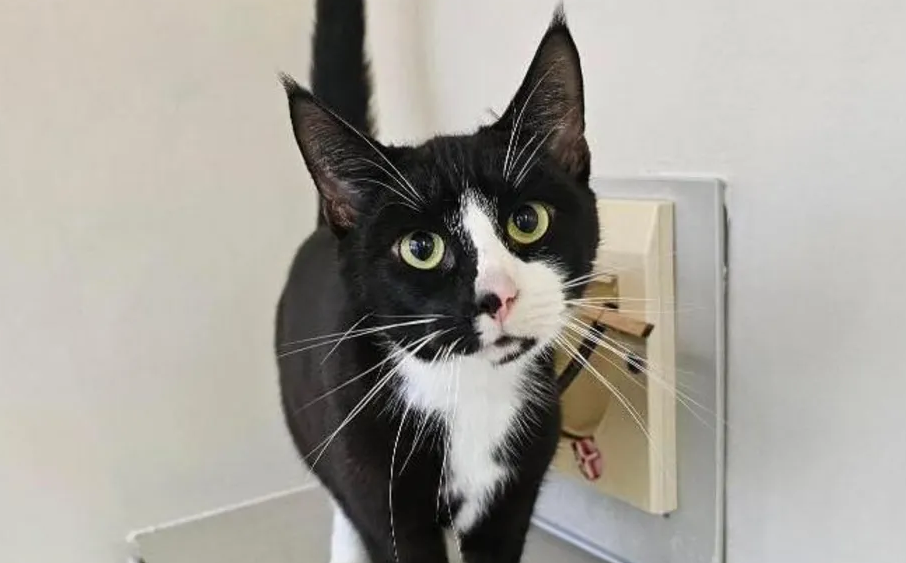
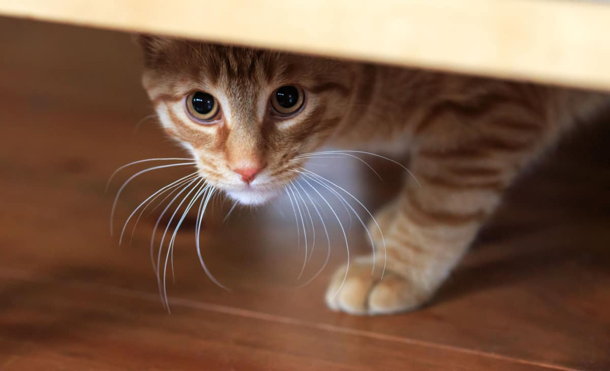
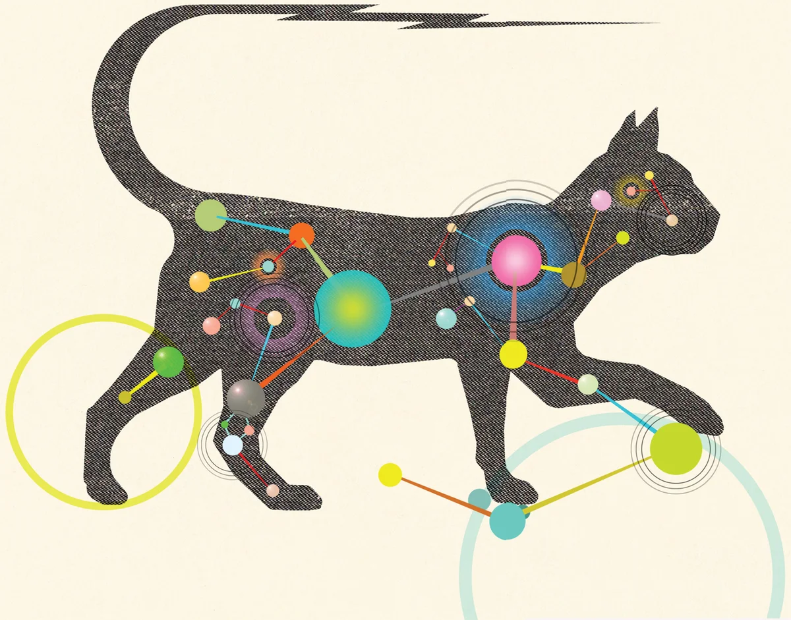

General
May 27, 2020
General
May 27, 2020
The Importance of Pets in Our Lives
Katie Reeves
“We’ve all heard people who say that pets are “just” animals, as though somehow they’re not important in our lives. These people have likely never owned a loyal dog or loving cat...
Read More
 Dogs
November 24, 2015
Dogs
November 24, 2015
Do Dogs Dream?
Dr. Nancy Kay, DVM, DACVIM
“Whether or not dogs dream isn’t known with scientific certainty, but it sure is difficult to imagine that they don’t. We’ve all watched our dogs demonstrate behaviors in their sleep that resemble what they do...
Read More
 Cats
February 5, 2024
Cats
February 5, 2024
The Joys of Owning a Cat
Kai Lundgren and Robert Segal, M.A.
“Owning a cat can be an extremely rewarding relationship. A cat has the ability to both calm your nervous system and provide an immediate outlet for fun and play. Although cats are independent...
Read More

General
December 14, 2024
RSPCA reports rise in number of neglected pets
RSPCA
“An animal charity has expressed concern for the wellbeing of pets this Christmas as it reports an increase in cruelty cases in both Devon and Cornwall.
The RSPCA said it had seen an increase...
Read More
Dogs
September 30, 2024
Dog Walking
John Woods
“Dogs love going for walks, to the point that many owners take to spelling out w-a-l-k when talking about the activity to keep their pooches from getting overly excited. Daily walks are not just a great way to exercise your dog; you can benefit from them as well...
Read More
Grief & Loss
August 21, 2024
Coping with Losing a Pet
Lawrence Robinson and Jeanne Segal, Ph.D.
“Many of us share an intense love and bond with our animal companions. For us, a pet is not “just a dog” or “just a cat,” but rather a beloved member of our family bringing companionship, fun, and joy to our lives. A pet can add structure to your day...
Read More
Dogs
February 5, 2024
Best Friends: You and Your Dog
Kai Lundgren and Robert Segal, M.A.
As many dog owners already know, taking the time to bond with your furry friend can turn your dog into a close companion for life. That is especially true when circumstances make it harder to maintain close ties with family and friends...
Read More

Cats
August 7, 2023
How To Help A New Cat Adjust To Your Home
The cat site
Welcoming a new cat into your home is an exciting milestone, filled with anticipation and joy.
But what if your new feline friend is hiding under the bed, seemingly overwhelmed by their new surroundings?
It's common to hear owners exclaim...
Read More

Cats
October 1, 2018
The Inner Life of Cats
Kate Wong
As anyone who has spent time with cats knows, our feline companions are mysterious—much more so than those other furry family members. Here John Bradshaw, author of Cat Sense...
Read More
Cats
December 19, 2024
How can I keep my cat happy?
Anne Quain
Around one third of Australian households live with at least one cat, yet surveys tell us the cats’ needs are not being met.
Cats may rule the internet, but humans often misconstrue feline behaviour. Earlier this year, the Washington Post boldly declared cat’s arent jerks...
Read More
General
July 18, 2024
Five ways to keep your pets cool when the weather’s hot
Jacqueline Boyd
When summer arrives in the UK, it seems to appear suddenly. One day we can be wrapped up cosy winter woollies – the next we are panic buying fans and ice lollies.
Any sudden and extreme change in temperature can be dangerous. Every year, people perish as a result of heat-related illness...
Read More
General
March 6, 2024
Everything You Need to Know Before Hiring a Pet Sitter
Hilary Young
Professional Pet Sitters Week, which is celebrated from March 3rd to the 9th, is a celebration of the hard working professionals who care for and love our pets in our absence. For those who have never hired a pet sitter before, the process can be overwhelming and nerve-wracking...
Read More